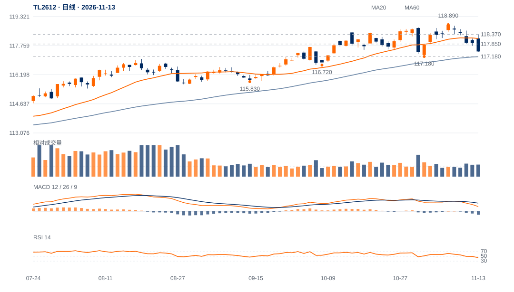

价格与周期共同转弱
TL2612／TL2703收117.45／116.98，分别距日低仅0.03／0.04点；完成周线大阴内包，周跌1.43／1.60点。11月6日后的修复升波已被大幅回吐。
两合约共同弱收、周线转弱及下跌段新增参与支持调整延续，不能只以近月减仓解释。117.18／116.91尚未日收失守，短周期超卖反抽仍是最重要反方。

查看大图 ↗各自完整60分钟及随后完整15分钟均收回117.85／117.47，转短线修复；118.37／118.02对应本轮上冲失败压力解除。
日收低于117.18／116.91，分别进一步破坏原修复波段；原跨资产研究118.15两日条件已于12日触发，独立保留。
TL2612／TL2703收117.45／116.98，分别距日低仅0.03／0.04点；完成周线大阴内包，周跌1.43／1.60点。11月6日后的修复升波已被大幅回吐。
近月减仓7576手、远月增仓4566手，合计减仓3010手；但两者都跌，远月更弱，价差由0.37扩大至0.47。价格压力并非只发生在减仓近月。
11:00—11:30两月分别跌0.24／0.27点、合计增仓1659手；空开12180手高于多开8635手。全天空开领先多开6.59个百分点，较昨日3.22扩大。
13:00—14:00的回补反抽有真实空平成交支持，但14:00后再跌。原小时加随后15分钟下行扩展已触发，新117.85／117.47修复过滤尚待未来完成。
15分钟RSI约29.8／28.7，远月日低116.94距主要波谷116.91仅0.03点；回补反抽已出现，低位直接追跌的空间不充分。
| 日期 | 多开% | 空开% | 多平% | 空平% | 双开% | 双平% | 多换% | 空换% |
|---|---|---|---|---|---|---|---|---|
| 11-06 | 24.39 | 23.50 | 17.06 | 18.81 | 3.99 | 2.57 | 5.33 | 4.33 |
| 11-09 | 17.53 | 20.00 | 22.34 | 23.80 | 2.92 | 3.67 | 5.24 | 4.50 |
| 11-10 | 18.27 | 22.36 | 21.17 | 21.38 | 3.44 | 3.62 | 4.83 | 4.94 |
| 11-11 | 17.28 | 23.73 | 20.46 | 22.64 | 3.20 | 3.11 | 4.45 | 5.15 |
| 11-12 | 17.73 | 20.95 | 21.58 | 23.55 | 2.98 | 3.84 | 4.58 | 4.79 |
| 11-13 | 17.54 | 24.13 | 18.76 | 23.25 | 2.71 | 3.77 | 4.78 | 5.06 |